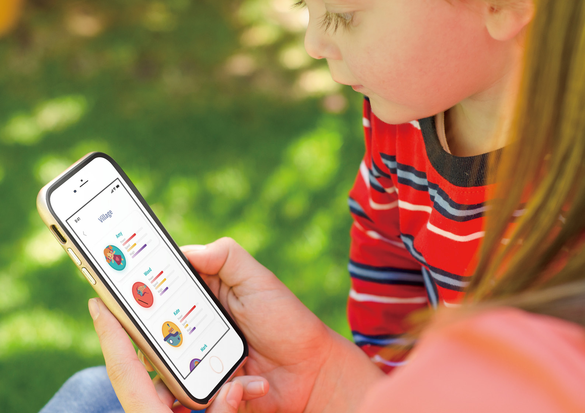
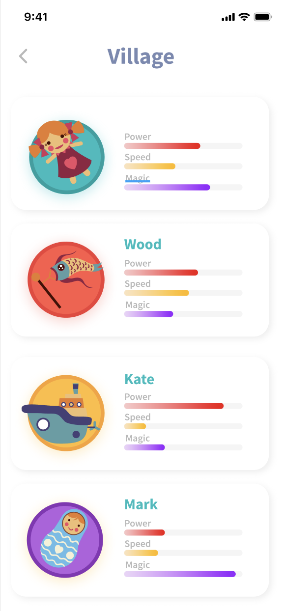

<!DOCTYPE html>
<!--  This site was created in Webflow. http://www.webflow.com  -->
<!--  Last Published: Thu May 07 2020 01:28:27 GMT+0000 (Coordinated Universal Time)  -->
<html data-wf-page="5ea0674c1e950e7130d66063" data-wf-site="5ea0674c1e950e0cf4d6605f">
<head>
  <meta charset="utf-8">
  <title>Less Toys, More Joy</title>
  <meta content="Less Toys, More Joy" property="og:title">
  <meta content="Less Toys, More Joy" property="twitter:title">
  <meta content="width=device-width, initial-scale=1" name="viewport">
  <meta content="Webflow" name="generator">
  <link href="css/normalize.css" rel="stylesheet" type="text/css">
  <link href="css/webflow.css" rel="stylesheet" type="text/css">
  <link href="css/covid-857f09-c352ee0109b9-9745793b59199.webflow.css" rel="stylesheet" type="text/css">
  <script src="https://ajax.googleapis.com/ajax/libs/webfont/1.6.26/webfont.js" type="text/javascript"></script>
  <script type="text/javascript">WebFont.load({  google: {    families: ["Montserrat:100,100italic,200,200italic,300,300italic,400,400italic,500,500italic,600,600italic,700,700italic,800,800italic,900,900italic","Lato:100,100italic,300,300italic,400,400italic,700,700italic,900,900italic","Merriweather:300,300italic,400,400italic,700,700italic,900,900italic","Montserrat Alternates:100,100italic,200,200italic,300,300italic,regular,italic,500,500italic,600,600italic,700,700italic,800,800italic,900,900italic:cyrillic,cyrillic-ext,latin,latin-ext,vietnamese"]  }});</script>
  <!-- [if lt IE 9]><script src="https://cdnjs.cloudflare.com/ajax/libs/html5shiv/3.7.3/html5shiv.min.js" type="text/javascript"></script><![endif] -->
  <script type="text/javascript">!function(o,c){var n=c.documentElement,t=" w-mod-";n.className+=t+"js",("ontouchstart"in o||o.DocumentTouch&&c instanceof DocumentTouch)&&(n.className+=t+"touch")}(window,document);</script>
  <link href="images/favicon.ico" rel="shortcut icon" type="image/x-icon">
  <link href="images/webclip.png" rel="apple-touch-icon">
</head>
<body class="body-2">
  <h1 class="heading">Less Toys, More Joy</h1>
  <p class="paragraph">&quot;Less toys more Joy&quot; is an App with installation that provide children with fun sharing toys experience, also offer them to play digital toys in the community with other children. By using this product, children will learn the concept of sharing and also enjoy the receiving moments.</p>
  <div class="section-content">
    <div class="container1">
      <h2 class="subtitle">Background</h2>
      <p class="paragraph">Most families have too many toys. And Kids are easily overwhelmed with choice, and a child who is unsure of what to play with often ends up playing with nothing at all. But the problem is even more fundamental than that. Old toys are wasted all the time and take lots of space to store. Also buying new toys is costly. In the end, the kids are bored; the house is a mess, and no one is happy.<br>‍<br>Also the problem brought issue to the environment. 90% of toys in the market are made by plastic. So throwing toys away can also cause huge damage to the environment. <br><br>Therefore, we wanted to design a toy-sharing service for kids to maximum the use of toys and provide kids with a more interesting social opportunity to make new peer friends.<br>‍</p>
      <h2 class="subtitle">Painpoints</h2>
      <ul class="list">
        <li class="list-item">Buying new toys: <br>‍<br>It cost a family a bunch of money to buy new toys for kids.</li>
        <li class="list-item">Dealing with old toys: <br>‍<br>Most families throw away the old toys, some families store the toys in house which takes lots of space.</li>
        <li class="list-item">playing with other children in the community: <br><br>There are limited ways for children to contact and communicate with other kids in the same community.<br></li>
        <li class="list-item">Toy wasting situation: <br><br>The toy industry is massive. 90% of the toys market are plastic toys, which cause huge damage to environment.<br></li>
      </ul>
      <p class="caption">Final prototype video</p>
    </div>
    <div class="container2">
      <div class="content-template-single-column">
        <div style="padding-top:56.17021276595745%" class="video w-video w-embed"><iframe class="embedly-embed" src="https://cdn.embedly.com/widgets/media.html?src=https%3A%2F%2Fwww.youtube.com%2Fembed%2FwZtpebB6vGI%3Ffeature%3Doembed&display_name=YouTube&url=https%3A%2F%2Fwww.youtube.com%2Fwatch%3Fv%3DwZtpebB6vGI&image=https%3A%2F%2Fi.ytimg.com%2Fvi%2FwZtpebB6vGI%2Fhqdefault.jpg&key=96f1f04c5f4143bcb0f2e68c87d65feb&type=text%2Fhtml&schema=youtube" scrolling="no" title="YouTube embed" frameborder="0" allow="autoplay; fullscreen" allowfullscreen="true"></iframe></div>
      </div>
      <h3 class="heading-3">User Journey</h3>
      <div>
        <div>
          <h3 class="heading-3">Wireframe</h3>
          <div>
            <h3 class="heading-3">UX Flow</h3></div>
        </div>
      </div>
      <div class="content-temolate-double-column">
        <div class="column-half-width"></div>
        <div class="column-half-width">
          <h2 class="subtitle">User testing</h2>
          <p class="paragraph">Pros:<br>‍<br>• The graphic design is suitable and attractive to kids<br><br><br>Cons:<br>‍<br>• Sharing part design is confusing, what’s the function of <br> each form?<br>• Confused with my toys and my sharing(which one is my toy and which one is the sharing one? The icon..)<br>• The blank one seems like boxes where I can input my toys.<br>‍<br>‍</p>
        </div>
      </div>
      <div class="content-temolate-double-column flax-center">
        <div class="column-half-width">
          <h2 class="subtitle">The Final iteration</h2>
          <p class="paragraph">• We add playing part in home page <strong><em>village </em></strong>function, which users can see the all the characters in the community</p>
          <p class="paragraph">• Consider about the instruction for kids, we add voice assistant to help guide the share function</p>
        </div>
        <div class="column-half-width">
          <p class="caption">close-up image</p>
        </div>
      </div>
    </div>
    <h3 class="heading-3">Sharing Box</h3></div>
  <script src="https://d3e54v103j8qbb.cloudfront.net/js/jquery-3.4.1.min.220afd743d.js?site=5ea0674c1e950e0cf4d6605f" type="text/javascript" integrity="sha256-CSXorXvZcTkaix6Yvo6HppcZGetbYMGWSFlBw8HfCJo=" crossorigin="anonymous"></script>
  <script src="js/webflow.js" type="text/javascript"></script>
  <!-- [if lte IE 9]><script src="https://cdnjs.cloudflare.com/ajax/libs/placeholders/3.0.2/placeholders.min.js"></script><![endif] -->
</body>
</html>